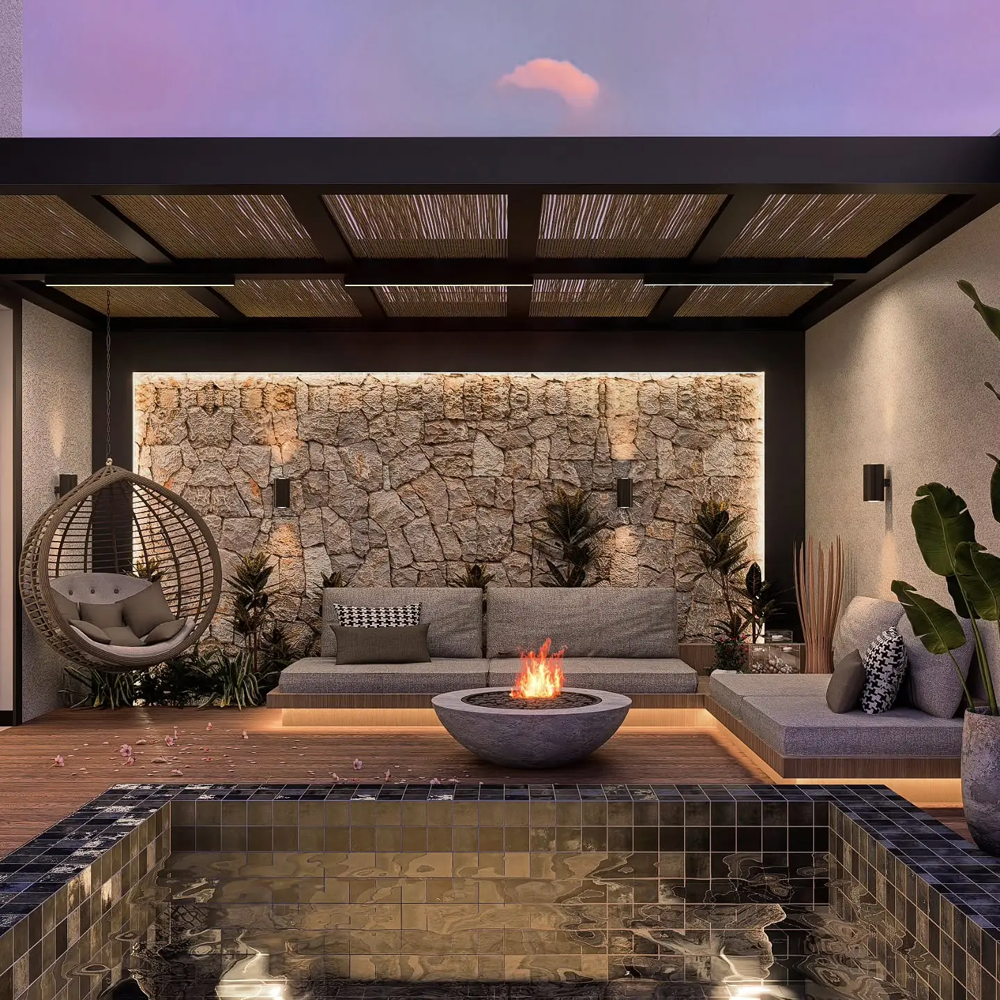
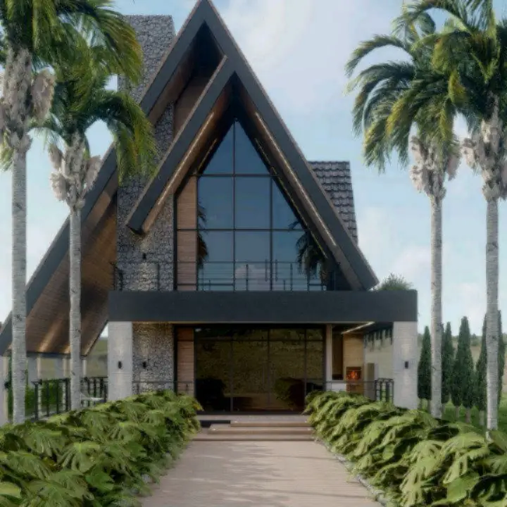
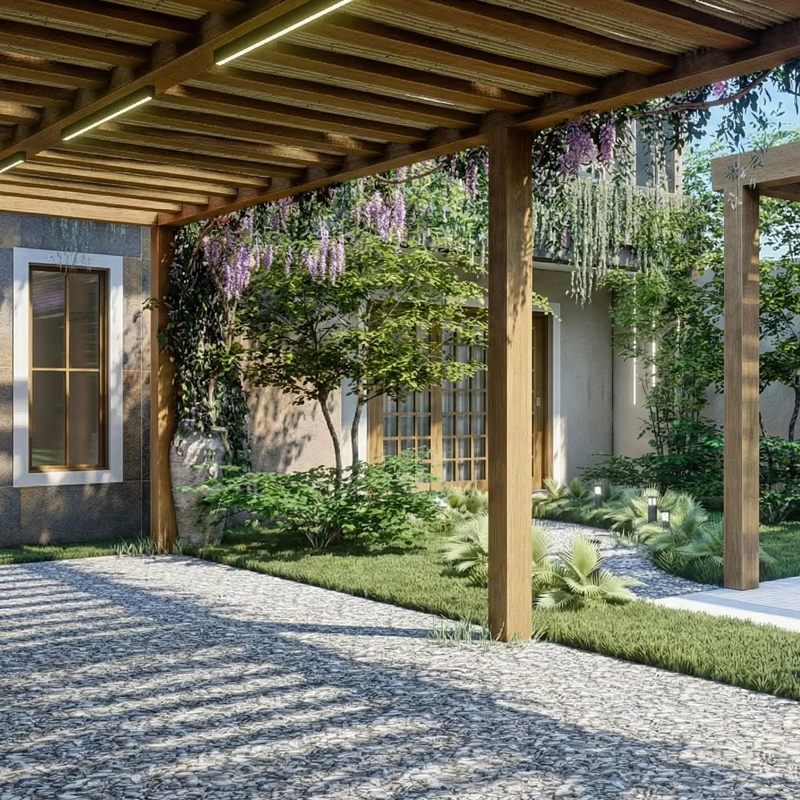
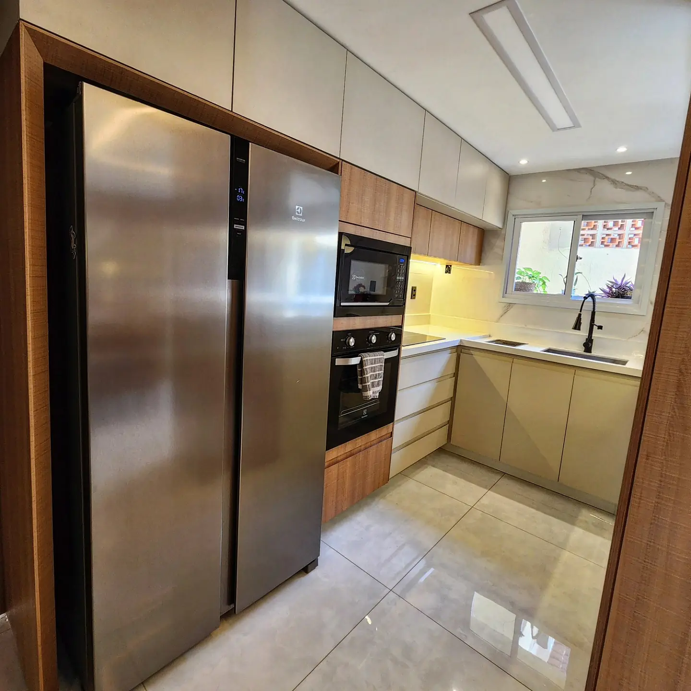
Arquitetura e interiores · Vila Velha, ES
Do projeto à obra,sem improviso.
Casas do zero, reformas e espaços comerciais.
- 13 projetos5 obras finalizadas e 8 em 3D
- Mais de 5 anosem projetos residenciais e comerciais
- Do zero à reformaarquitetônico, interiores e consultoria
- Presencial e onlineescritório em Vila Velha, ES
Projetos
Cada projeto indica se as imagens são de obra finalizada ou do projeto em 3D.
Como trabalho
O que é aprovado no 3D é o que chega na obra.
Cada etapa prepara a seguinte, para prever complicações e compatibilizar a obra antes de ela começar.
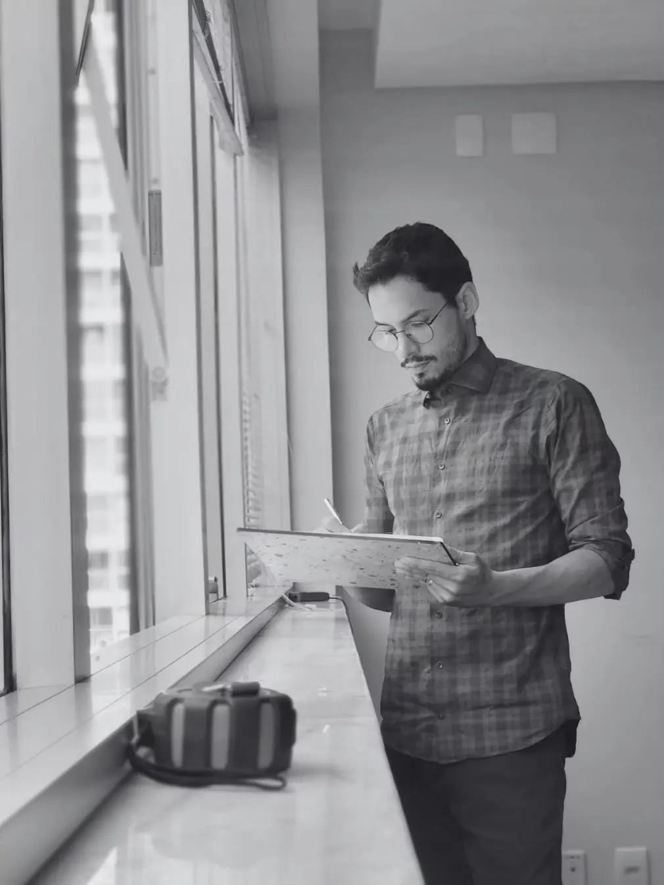
01Levantamento
Conferir medidas e entender o espaço antes de qualquer traço. Um erro aqui compromete circulação e funcionalidade.
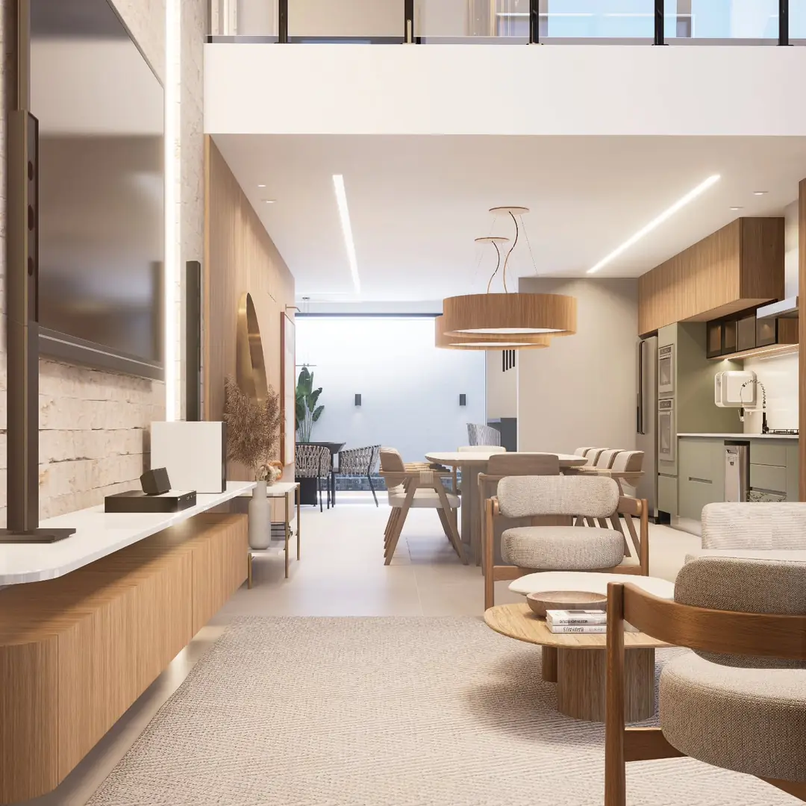
02Estudo e 3D
Volumes, cores e texturas aparecem na maquete eletrônica, para o cliente enxergar e aprovar o resultado com clareza.
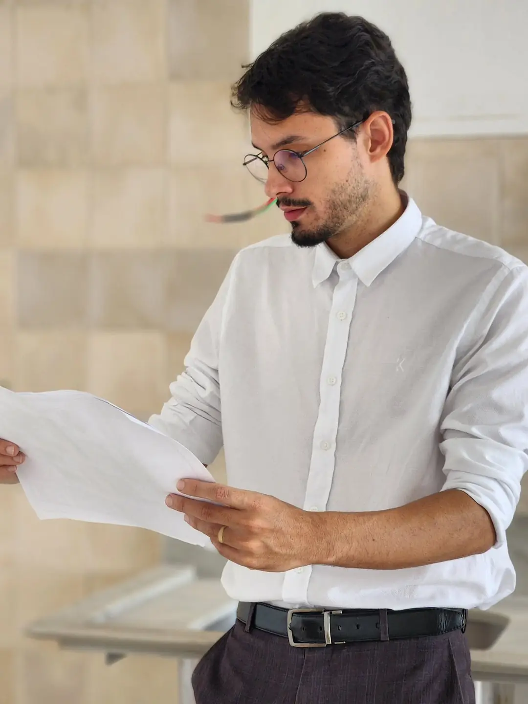
03Projeto técnico
Sem embasamento técnico, o 3D é só imagem. O projeto executivo traduz as escolhas em soluções detalhadas e executáveis.
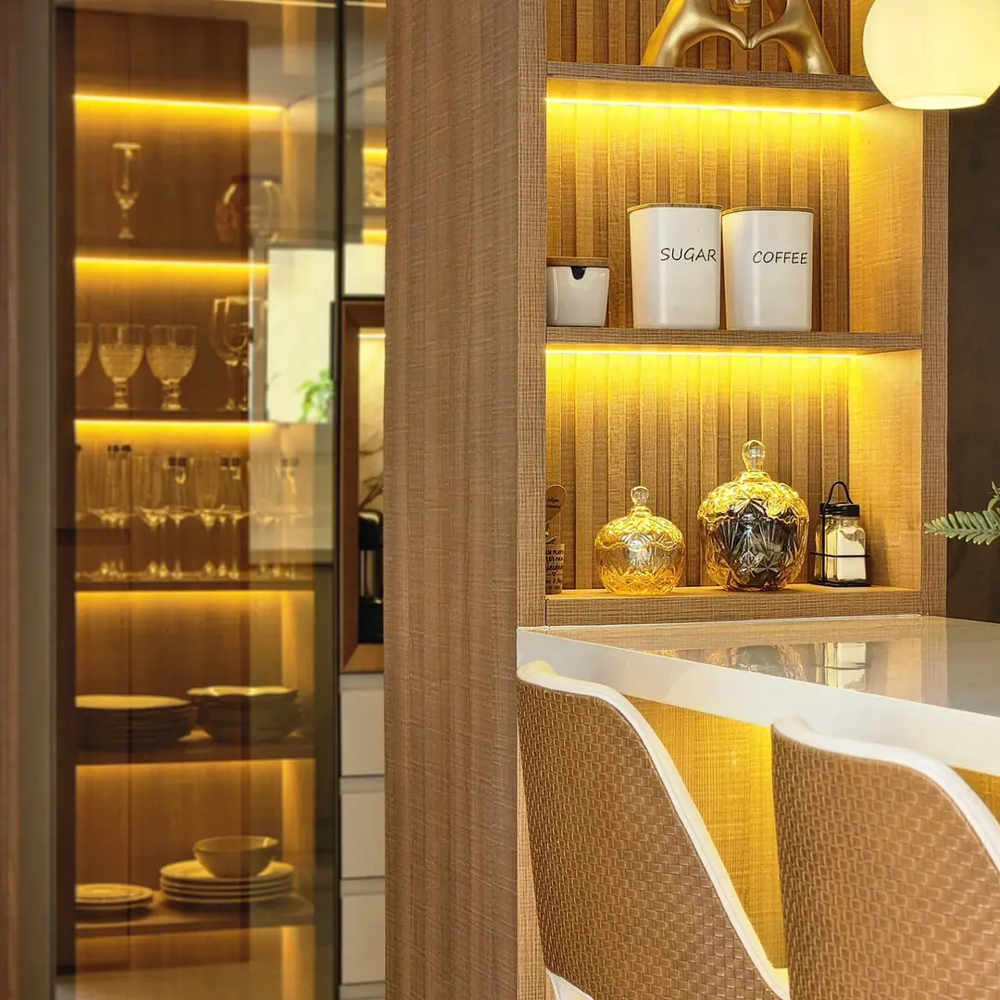
04Na obra
Conferir de perto se o que foi desenhado está sendo executado. O aprovado no 3D é o que chega na obra, sem improviso.
Reforma executada · Airbnb 405
23 m² que passaram a entregar muito mais.
Divisórias removidas, bancada redesenhada, revestimentos, iluminação e banheiro renovados, numa reforma para locação por temporada na Praia de Itapuã.
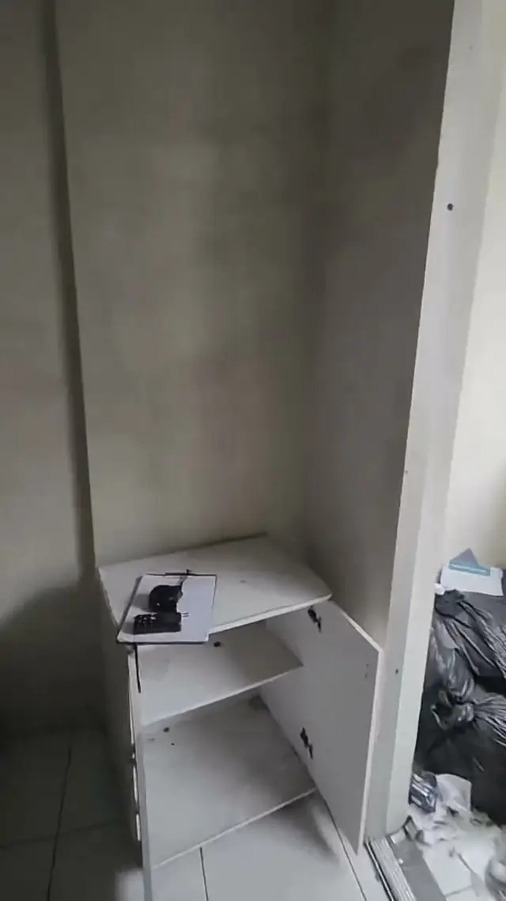
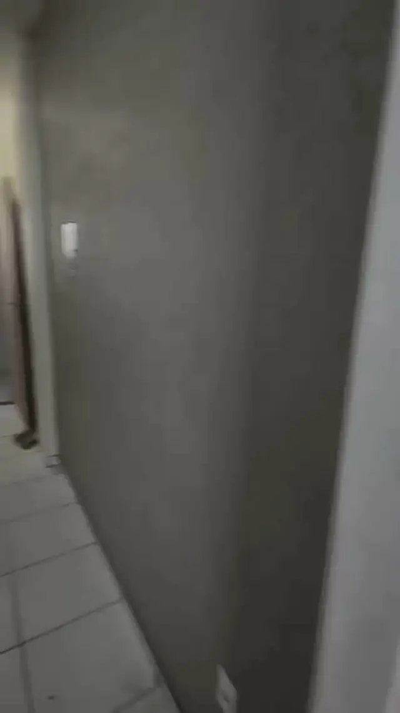

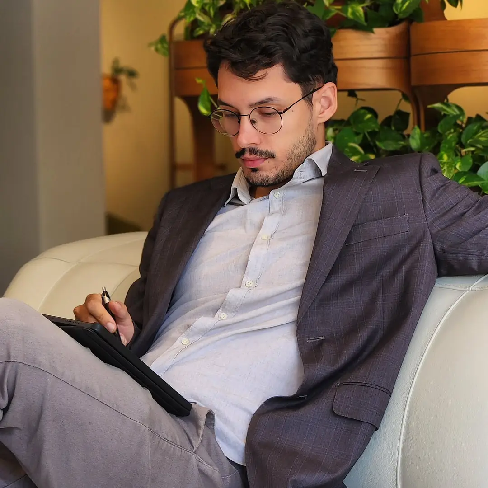
À frente do escritório
Régis Carvalho
Há mais de cinco anos em projetos residenciais e comerciais, fachadas e interiores. Formado em Arquitetura pela Multivix Vila Velha, com pós-graduações em Gestão de Projetos e História da Arte, Master BIM Specialist e pós-graduação em Design de Interiores em andamento.
Acompanhar no InstagramQuem já passou pelo processo
Mensagens enviadas pelos clientes no WhatsApp, sem edição.
Seu próximo projeto
Conte o que você tem em mente.
Uma casa nova, uma reforma ou um espaço para o seu negócio. Atendimento presencial em Vila Velha e online.
(27) 99283-1871 @regiscarvalho.arquitetura